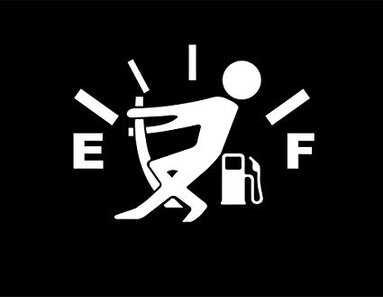

Fuel Efficiency of Different Types of Car Engines
Have you ever wondered what you could have done to purchase a more economical vehicle?
Fuel efficiency of cars is one of the major factors which can be used by potential consumers to make this decision. Among many
other things, it can help the consumer to determine:
1) Estimated periodical usage costs for the vehicle.
2) Estimated potential maintenance costs for the vehicle.
3) The inadvertant negative impact on the environment for using a particular vehicle.
But what causes the fuel efficiency of different vehicles to vary from each other?
The number of cylinders in an engine are highly correlated to the fuel efficiency. The lower the number of cylinders, the higher its
MPG and the higher the number of cylinders the lower its MPG. This can be observed by comparing engines of different sizes.
For example, 4-Cylinder engine vs 6-Cylinder engine.
And what is the effect of different engine sizes on city and highway MPG? How do electric cars compare to cars that use other fuel types?
Is there a major difference in fuel efficiency of electric cars?
As engine size decreases, the avg city and highway MPG increase suggesting smaller engine cars are more fuel efficient. However, electric
cars are in their own league when it comes to fuel efficiency and are significantly better than the old-fashioned cars.
Click to Explore: Fuel Efficiency of 4-Cylinder Engines and 6-Cylinder Engines
Click to Explore: Correlation between City and Highway MPG for Different Engine Sizes and Comparison with Electric Cars.
